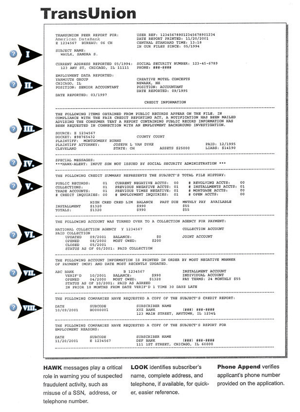

Credit cards are such a big issue because they are easy to get, easy to use—and for many people, addictive. Until new regulations in 2009 and 2010, many college students got deeply in debt and experienced financial disaster. The new regulations set limits to prevent such serious problems for students under age twenty-one, but older students may still experience problems from overuse.
Credit cards do have legitimate purposes:
Even though federal regulations require banks to disclose all fees and make it more difficult to increase fees or rates without warning credit card holders in advance, many people overuse credit cards and pay high interest rates and fees for making late payments. The average American household has credit card debt of $5,000 to $8,000 (reports vary). College students reportedly are more likely to be late with payments and incur additional fees.
Your first goal with a credit card is to understand what you’re getting into and how you are charged. Read the fine print on your monthly statements. You should understand about rate increases and know what happens if you miss a payment, pay less than the minimum, or pay late. It also pays to shop around. Two good Web sites—http://www.cardtrak.com and http://www.bankrate.com—compare rates of many credit cards and provide more information about how credit cards work.
All credit cards come with a limit, the maximum total amount you can charge, but this is not the same as the limit you should set for how you use the card based on your budget. If you bought something that cost $400, for example, would your monthly budget let you pay it off when the bill comes? If it will take you two or three months to have that much available in your budget, are you also including the interest you’ll be paying? What if an unexpected need then arises and you need to charge more?
Set your personal use limit by calculating how much your budget allows you to charge. If you are using the card just for convenience, such as to pay for meals or regular purchases, be sure you have enough in those categories in your budget left at the end of the month to make the payment. If tempted to buy a significant item with your credit card, do the calculations in advance.
If your credit card debt is not limited by your age, that balance can rapidly rise. Before the 2010 regulations, the average student had accumulated a debt estimated as high as $3,000. Following are tips that will help you avoid slipping into credit card debt:
Many younger college students are just beginning to develop a credit historyA general term referring to a person’s past use of credit and payment patterns.. Older students likely have had credit cards for years, as well as automobile and other types of loans, possibly a mortgage, and other financial transactions that add up to a credit history. But everyone needs to understand what a credit history is and how your monetary habits now can affect your future financial well-being and your future options. For example, frequent overdrafts on a debit card can prevent you from being approved for a credit card, or late credit card payments can prevent you in the future from obtaining a car loan.
Credit bureaus collect financial data on everyone. The credit reportA written report, compiled by a credit bureau, listing the details of a person’s credit history, possibly including a credit rating, FICO score, or both. they issue is a detailed history of many years of your financial habits (Figure 11.4 "First Page of a Typical Credit Report"). It includes the following:
All this information remains in your credit report for up to seven to ten years. What you do today can really come back to haunt you!
Figure 11.4 First Page of a Typical Credit ReportAmerican DataBank, “Trans Union Sample Credit Report,” http://www.americandatabank.com/trans_report.htm (accessed July 15, 2010).
If you have ever had a loan or credit card, you already have a credit history. It can be important to know what is in your report. Errors are common in credit histories and, if not corrected, can hurt you in the future.
You are entitled to a free copy of your credit report every year, and ideally you should check it every year for possible errors. To obtain a copy online, go to http://www.annualcreditreport.com. This is a government Web site, and the report is free.
You may also visit the Web site of any of the three main credit bureaus, but be aware that each has for-fee services they may attempt to sell you while obtaining your report.
Once you receive your credit report, go over it carefully to make sure its information is accurate. If you have paid off and closed an account, for example, it should not be listed as still open. Make sure all accounts listed actually belong to you and that the balances listed are correct. If you do find an error, report it promptly, following the procedure on the credit bureau’s Web site.
It’s also important to keep good financial records. Don’t immediately throw away your credit card statements or loan papers. You may need these to prove an error in your credit history.
To sum up your creditworthiness, credit bureaus analyze all your data to come up with a single number, called your credit score or FICO scoreA standard credit score often included in a credit report generated by a credit bureau, used to measure a person’s credit risk; an acronym for the Fair Isaac Credit Organization, which devised the basic formula for calculating this score.. (FICO is short for the Fair Isaac Credit Organization, which created this method of analyzing data.) The calculations of each credit bureau differ somewhat. The score may be anywhere between 250 and 336 (poor credit risk) and 843 and 900 (excellent credit risk). The score is based on the following:
Credit bureaus are not required to tell you the FICO score that they report to a lender who inquires about your credit history. Check with any of the individual credit bureaus listed earlier, if you need to know your score. Or you may be able to get this information from a lender with whom you have a loan. Most students have no need to know their credit score, except to understand how banks and other lenders make their decisions if you are applying for any type of loan.
Identity theft is a serious and growing problem. Identity theftA fraudulent use of someone’s identifying or personal data or documents, such as a credit card. is someone else’s use of your personal information—usually financial information—to make an illegal gain. A criminal who has your credit card number or bank account information may be able to make purchases or transfer funds from your accounts. Someone with the right information about you, such as your social security number along with birth date and other data, can even pretend to be you and open new credit accounts that you don’t know about—until the bank or collection agency tries to recover amounts from you. Although innocent, you would spend a lot of time and effort dealing with the problem.
Follow these guidelines to prevent identity theft:
Maria’s Financial Dilemma
When Maria decided to attend a community college after working full time a few years, she was confident she could afford it. She had saved enough money to pay tuition for two years, and she cut back to part-time work that paid enough, she calculated, to live on. With great enthusiasm she registered for the fall term.
Her money problems began in November when her car broke down on the way to her job. The mechanic said her transmission had to be rebuilt and her car also really needed new rear shocks The bill was well over a thousand dollars. She paid with her Visa card. At the end of the month, she didn’t have enough in her checking account to pay the credit card bill in full. She almost decided just to pay the minimum, but then she checked her statement and saw the 18 percent interest rate and decided to pay the full balance from her savings. She wouldn’t need that money for tuition until next year anyway, and that gave her a long time to save it up.
The first week in December, she slipped on an icy sidewalk and sprained her ankle. She had student health insurance, though she had to make a copayment. Unfortunately, she couldn’t do her job on crutches, so she lost two weeks’ pay.
Still, “that’s life,” she thought, although she was so worried about money now that she almost decided to register for just two courses the next term. But college was her priority, so she took a full load and increased her work hours for a couple months to help her get caught up financially. But then as midterm exams grew closer, she felt unprepared because she hadn’t had enough time for studying. Because of the stress she wasn’t sleeping well, and one day she fell asleep in class. Always rushing around, she was eating more junk food than ever and feeling too guilty to even get on the scale to see if she was gaining weight, too. She found herself daydreaming about the coming summer and being free of classes. To feel better, she took long drives in her car on the weekends.
She did pass her midterms, though she did not do as well as she’d hoped. She still hadn’t been able to save enough for next year’s tuition but felt that she had the summer to work full time and make up for it.
In April, her boss told her that business was too slow to be able to increase her hours to full time for the summer. He was very sorry, but she could keep working part time if she wanted.
Now Maria really doubted if she’d be able to make it. Her family could spare no money to help her out. She had enough for rent, food, and her car, but that was about it. If she didn’t figure something out, she couldn’t afford tuition in the fall. Even with an installment plan to break up tuition payments, she just wasn’t making enough to cover it. She didn’t know what to do.
What is the first step Maria should take to start sorting out her financial situation and learn about her options?
__________________________________________________________________
Maria’s financial planning was based on making enough to cover what she spends and using her savings for tuition. If she were to make a monthly budget and analyze every expenditure, might she be able to cut back and save more for unexpected expenses that come up? List areas in which she would likely be able to spend less if she used a budget.
__________________________________________________________________
__________________________________________________________________
__________________________________________________________________
Maria’s attitude toward her credit card is a healthy indicator that she wants to avoid debt. If this proved to be the only solution, however, should she consider a student loan to cover the tuition for her second year? Why or why not?
__________________________________________________________________
__________________________________________________________________
If Maria was considering not attending college the second year but instead looking for a new full-time job that would allow her to save up tuition money again, what advice might you give her?
__________________________________________________________________
__________________________________________________________________
What is the best number of credit cards to have and carry with you?
___________________________________________________
For each of the following statements, circle T for true or F for false:
| T | F | The more credit cards you have, and the larger the balances you keep, the better is your credit rating as long as you make the minimum payments every month on time. |
| T | F | Most credit cards charge the same interest rate. |
| T | F | An overdraft on an ATM cash advance won’t cost you anything as long as you pay it off at the end of the month. |
| T | F | Your credit history begins only after graduation from college, so it doesn’t matter much how you manage money while still in school. |
| T | F | Identity theft happens only to senior citizens. |
How often can one obtain a free credit report?
___________________________________________________